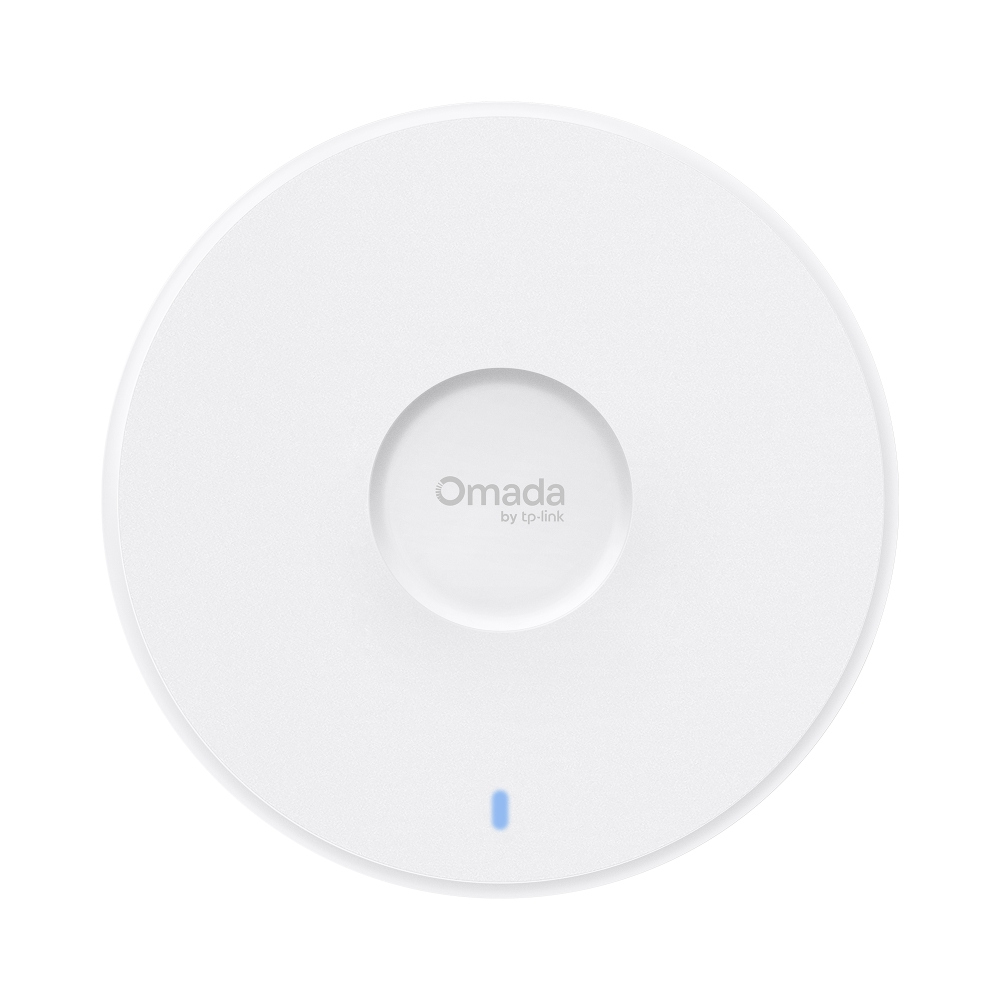
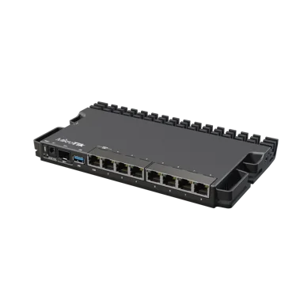
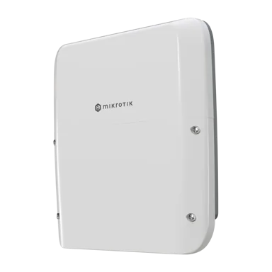

BE11000 Ceiling Mount Tri-Band Wi-Fi 7 Access Point

Modèle attendu : EAP773 Wi-Fi 7
Images candidates à vérifier. Confirmer le modèle et les droits avant publication.

Modèle attendu : EAP773 Wi-Fi 7

Modèle attendu : EAP783 Wi-Fi 7

Modèle attendu : RB5009UG+S+IN

Modèle attendu : RB5009UPr+S+OUT